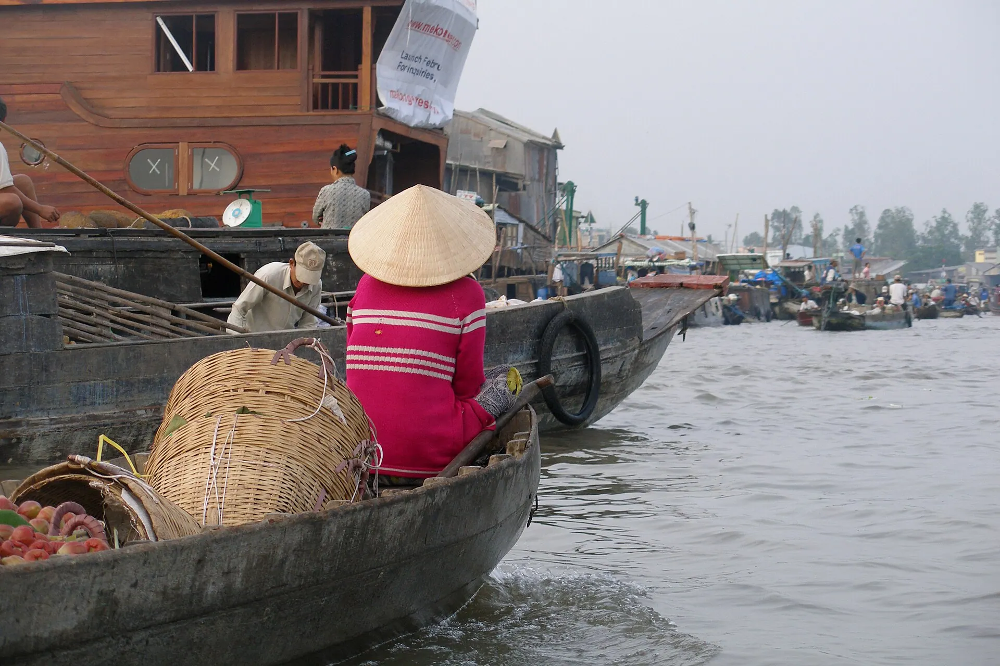

湄公河煎饼
锅那么大的煎饼，包豆芽、虾和猪肉，卷芥菜叶吃。

湄公河三角洲的中心城市芹苴有着独特的河上体验：黎明开市的丐冷水上市场、果实累累的果园、椰林掩映的运河，还有以热情温和著称的西南部人民。
正在加载天气...
点击月份查看是否适合出行
Durian, rambutan, mangosteen and mango are all in season – many orchards in Phong Dien and Cai Rang let you eat straight from the trees.
Ask the entry price (usually covers eating on site; take-away is extra) and bring mosquito repellent.
Short afternoon downpours that pass quickly; some Saigon streets flood in heavy rain and high tides; seas around the southern islands get rough.
Plan outdoor activities in the morning and always carry a raincoat; boats to Nam Du and Phu Quoc may be cancelled in rough seas.
Rising water brings linh fish, sesbania flowers and lush Tra Su forest.
Try linh fish hotpot – only available this season.
农历节日每年日期不同——出发前请确认官方日期。
锅那么大的煎饼，包豆芽、虾和猪肉，卷芥菜叶吃。
放新鲜虾的小脆饼，配香草和鱼露。
炭烤班兰糕，蜂窝状口感，配椰奶。
在水上市场的船上现卖的热汤粉。
Noodle soup and coffee served from boats at dawn
Chợ nổi Cái Răng (đi thuyền từ bến Ninh Kiều) 更新于 2026/09 报错Mekong fermented-fish hotpot with many greens
89 Đường 3/2, Ninh Kiều 更新于 2026/09 报错Shrimp fritters, banh xeo
Ninh Kiều, Cần Thơ 更新于 2026/09 报错Street snacks and Mekong fruit by the river
Bến Ninh Kiều, Cần Thơ 更新于 2026/09 报错Hu tieu or banh canh for breakfast
Bến Ninh Kiều, Cần Thơ 更新于 2026/09 报错Mekong banh xeo with mustard greens
Đường Ngô Văn Sở, Ninh Kiều 更新于 2026/09 报错Straw-grilled snakehead, fish-sauce hotpot
Cồn Sơn, Cần Thơ 更新于 2026/09 报错Orchard fruit and folk cakes
Xã Mỹ Khánh, Phong Điền 更新于 2026/09 报错每人参考价格。点击地址可在 Google 地图查看营业时间和最新评价。
在热闹的交易中坐船吃早餐。
在园中采红毛丹、榴莲和山竹。
在河边欣赏南部传统音乐。
探访 Tan Loc 和 Son 岛的乡村生活。
根据此目的地和月份推荐（在行程部分选择出发日期可更改月份）。勾选已打包的物品方便记忆。
发现价格、开放时间变了或店铺已关门？ 报错
400k–1.5M / 晚
Near the boats for the dawn floating market.
300k–800k / 晚
Garden homestays among fruit orchards.
1.5M–3.5M / 晚
Eco-resorts on river islets.
Can Tho Airport (VCA) is ~10 km from the centre. ~3.5 h by bus or limousine from Saigon (170 km).
两人一晚参考房价，春节、假日和周末更贵。Việt Travel 不从预订网站收取佣金。
Việt Travel · 芹苴 · 最佳时间: 9 月 – 11 月（洪水季）
Arrive in Can Tho, visit Binh Thuy ancient house and Ong Pagoda.
Phong Dien fruit orchards and Mekong bánh xèo.
Stroll Ninh Kieu wharf and take a cruise with đờn ca tài tử music.
夜间散步片刻，然后回去休息
Boat to Cai Rang floating market at 5 am and eat hủ tiếu on a boat.
A traditional noodle workshop and My Khanh tourist village.
Tay Do night market and fermented fish hotpot.
夜间散步片刻，然后回去休息
Son islet – "flying" snakehead fish and folk cake making.
Bang Lang stork garden with thousands of storks returning home.
Orchard homestay.
夜间散步片刻，然后回去休息
行程结束：退房，购买当地特产后返程。
在住处吃早餐（常含在房费中）
Soc Trang: Bat Pagoda and Chen Kieu Pagoda.
Clay Pagoda, bún nước lèo and bánh pía cakes.
逛夜市或美食街吃晚餐
Back to Can Tho.
夜间散步片刻，然后回去休息
行程结束：退房，购买当地特产后返程。
在住处附近当地人多的小店吃早餐
Head to An Giang for a boat ride in Tra Su cajuput forest.
在景点附近吃简单的米饭午餐
在住处附近吃晚餐——选当地人多的店
Chau Doc fish noodle soup and fermented fish gifts.
行程结束：退房，购买当地特产后返程。
明细：预算
明细：舒适
明细：预算
明细：舒适
明细：预算
明细：舒适
不含前往芹苴 – 湄公河三角洲的机票/交通。参考价格，随季节变动。
想去多个地方？把芹苴 – 湄公河三角洲和其他目的地组合起来吧。
分享你的经历
读者照片
还没有照片——来第一个分享你在芹苴 – 湄公河三角洲的瞬间吧！
分享你的照片